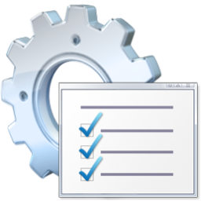
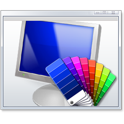

О себе
- Мне 17 лет
- Я живу в Москве
- Хочу стать frontend-, а позднее fullstack-разработчиком

Я люблю... .
- Котиков
- Рисовать
- Вкусно поесть
- Музыку 80-х
- Игры-одевалки

Hard Skills
- Хорошо знакома с тремя китами веб-разработки: HTML, CSS и JavaScript, а также с адаптивной вёрсткой.
- Знаю React на достаточно глубоком уровне: использовала продвинутые хуки вроде useContext и useEffect.
- Изучала SASS и SCSS.
- Работала с Node.js (npm): создавала приложение на React с помощью create-react-app, устанавливала в такое приложение пакеты.
- Умею работать с Git.
- Пользовалась сборщиком Vite, а также Webpack.
- Работала с Jekyll и Eleventy.

Soft skills
- Организованна, трудолюбива и целеустремлённа
- Обладаю хорошей памятью
- Стремлюсь помочь другим
- Грамотно пишу как на русском, так и на английском

Мои проекты
1. Сайт с викторинами
Это первый проект, который я развернула на GitHub Pages. Раньше у него был другой дизайн - более примитивный и устаревший. У сайта и репозитория сохранено историческое название - test-about-meСсылка на страницу
Ссылка на репозиторий
2. Цифровой повар
Веб-приложение, алгоритм которого подбирает блюда на основе выбранных пользователем кухонь, категорий и ингредиентов. Есть ещё версия на Python, но она никуда не выложена.Ссылка на страницу
Ссылка на репозиторий
3. Сайт о стилях в дизайне интерьеров и архитектуре
Этот сайт написан на React. Я использовала при его создании СУБД Firestore (сейчас я отказалась от неё) и npm-пакет @floating-ui/react-dom.Ссылка на страницу
Ссылка на репозиторий
4. Блог о моде и стиле
При создании этого сайта я использовала фреймворк Bootstrap. Должна сказать, что наполнение этого сайта не будет происходить быстро ввиду моей загруженности.Ссылка на страницу
Ссылка на репозиторий

Сайты, свёрстанные по чужим макетам
1. Coca
Сайт компании, оказывающей услуги в области цифрового маркетинга. Написан на английском языке. Макет и лайв-превью были неполными, поэтому часть проекта мне пришлось "домысливать". Сайт многостраничный, помимо главной страницы есть следующие разделы:- О компании
- Контакты
- Тарифы
- Блог (вдобавок, есть один пост)
При работе над проектом я использовала следующие технологии:
- Webpack
- EJS
- Express.js
- Методология БЭМ
- SASS
Ссылка на репозиторий
Ссылка на источник макета
2. Aveji
Простой одностраничный сайт мебельного магазина.Ссылка на страницу
Ссылка на репозиторий
Ссылка на источник макета
3. Armata Financial Group
Одностраничный сайт, сделанный по очень старому туториуалу. Неудивительно, что при его создании мне пришлось использовать устаревшие технологии, такие как jQuery. Но выглядит неплохо.Ссылка на страницу
Ссылка на репозиторий
Ссылка на плейлист с уроками

Галерея изображений со мной